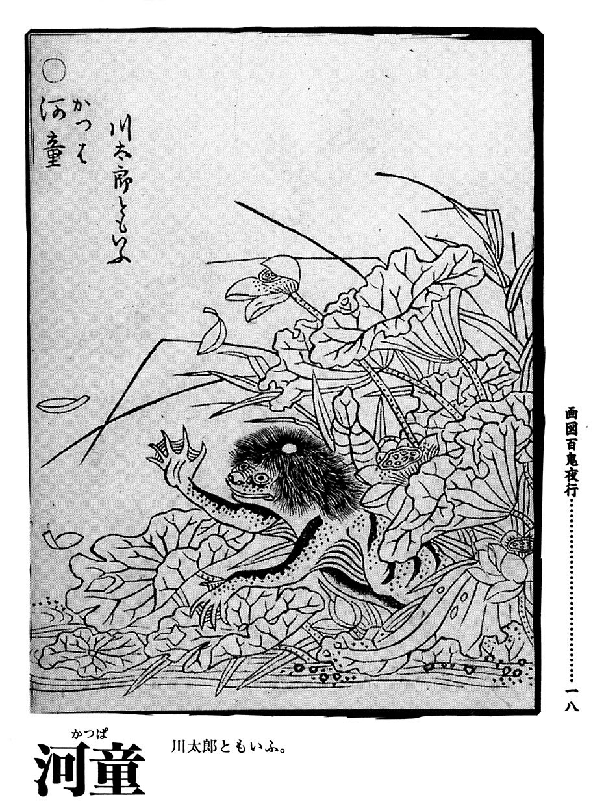

河童
簡介
河童是日本民間傳説中的傳説生物，有鳥的喙、青蛙的四肢、猴子的身體及烏龜的殼，如同多種動物的綜合體。傳説其弱點為頭頂的碟，只要誘騙河童彎身，讓他頭頂碟子裏裝的水流盡，他就會精力盡失。
傳說
據説有一位名叫九千坊的頭目，帶領着河童一族從中國輾轉來到九州的球磨川雲仙温泉一帶的地方住了下來。他經常率領着部下出現在村莊裏，惹出許多麻煩，由於他擁有能夠將馬拉到河邊的怪力，所以村裏的人都敵不過他。知道此事極為震怒的熊本城主加藤清正，利用河童最討厭的猿，將為害百姓的河童好好地教訓了一番，從此以後河童只好乖乖地住在熊本縣筑後川。後來成為水天宮的使者，其分社位在江户之赤羽河岸有馬氏的宅邸，（久留米殿下）後來移到日本橋附近。